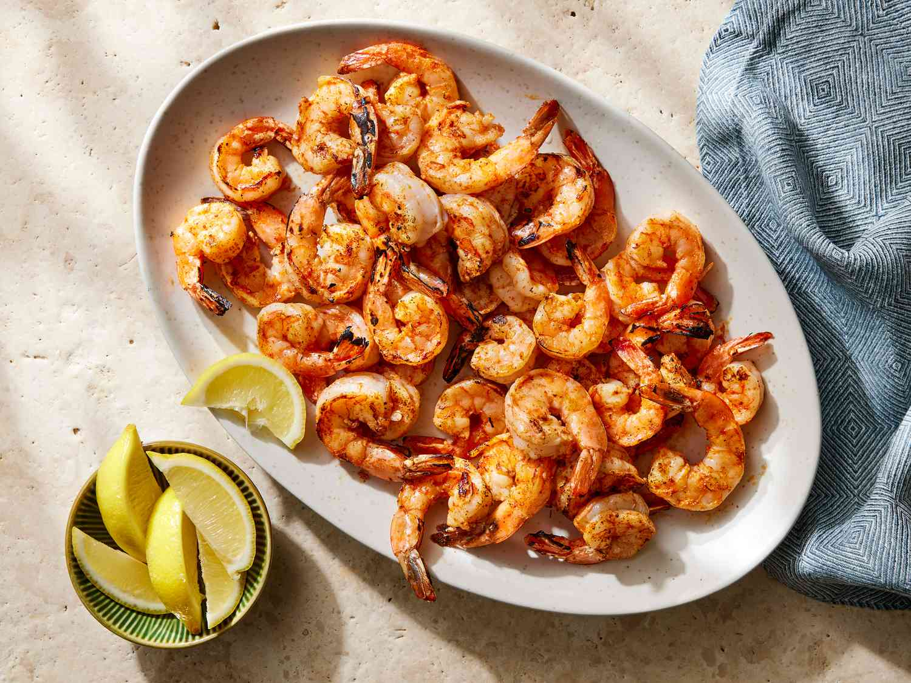

Home
Shrimp Recipe

A delicious shrimp recipe
Ingredients
- 1 cup chicken stock
- 1 tablespoon reduced-sodium soy sauce
- 1 tablespoon cornstarch
- 1 tablespoon minced garlic
- salt and ground black pepper to taste
- 3 tablespoons sesame oil
- 1 (16 ounce) package frozen stir-fry vegetables
- 20 uncooked medium shrimp, peeled and deveined
Steps
Step 1
- Gather all ingredients.
Step 2
- Mix chicken stock, soy sauce, cornstarch, and garlic in a bowl; season with salt and pepper.
Step 3
- Heat sesame oil in a large skillet over medium-high heat until oil shimmers;
cook and stir vegetables in hot oil until softened, about 4 minutes.
Step 4
- Add shrimp; cook and stir until shrimp begin to turn pink, about 3 minutes.
Step 5
- Stir chicken stock mixture into vegetable-shrimp mixture.
Continue to cook and stir until vegetables and shrimp
are coated and sauce is thickened, about 5 minutes more.
Recipe Link down bellow:
Recipe Link